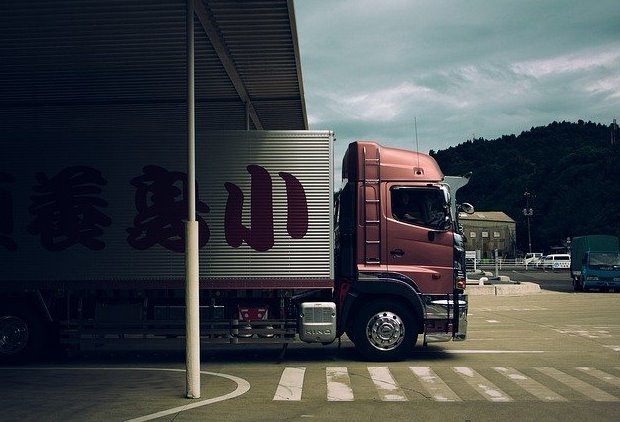

Что общего у начальника и водителя-дальнобойщика?
Понаблюдайте при случае, как паркуются дальнобойщики. Как они направляют кабину, чтобы кузов поехал в нужную им сторону. Попробуйте смоделировать в голове все геометрические тонкости процесса.
А теперь уберите из этой схемы водителя.
Будет ли толк от того, что колёса хорошо крутятся, зеркала настроены, в двигатель залито свежее масло и дальше по списку?
С руководителем ситуация аналогичная. Исполнителям часто кажется, что всю работу делают они, а начальник попивает кофеёк, прохлаждается на совещаниях и за всё это получает большую зарплату.
Несправедливо?
Ещё как!... если видеть только свой кусочек пазла. Когда же исполнитель сам становится начальником, тут начинаются открытия:
- Если сорван срок — спрашивают с руководителя.
- Если подчинённый не справляется с нагрузкой — руководитель разбирается, в чём проблема и перераспределяет силы.
- Если кто-то собирается в декрет или постоянно уходит на больничный — у руководителя болит голова, как передавать дела.
- Если исполнитель пропал с радаров в разгар работы — ну, вы поняли.
Словом, что бы ни происходило в подразделении, ответственность лежит только на его главе.
Можно ли тогда доделывать или переделывать работу исполнителей? Это скользкая дорожка, потому что невозможно одновременно быть колесом и эффективно управлять грузовиком.
Вот и выходит, что у каждого свои задачи. У исполнителя — делать свою часть работы. А у руководителя — держать в голове общую картину, учитывать все возможные риски и обеспечивать результат. Чужими руками.
Как без промаха выбирать сотрудников и ставить задачи, чтобы они выполнялись по-вашему, мы ещё поговорим.
Комментарии читателей:
"Прекрасная параллель "руководитель - дальнобойщик". Уточню только, что и компания в этом сравнении,тогда является огромным механизмом, который в одиночку не сдвинуть с места. Тот же дальнобойщик свои рабочие жигули самостоятельно дотолкает на обочину, а на пустой трассе и до СТО. Соответственно, в малых компаниях, похожих на ломающиеся жигули, руководитель может как бросить компанию, так и "поработать за колесо".
И как Вы правильно заметили: "Не застревайте в этом".